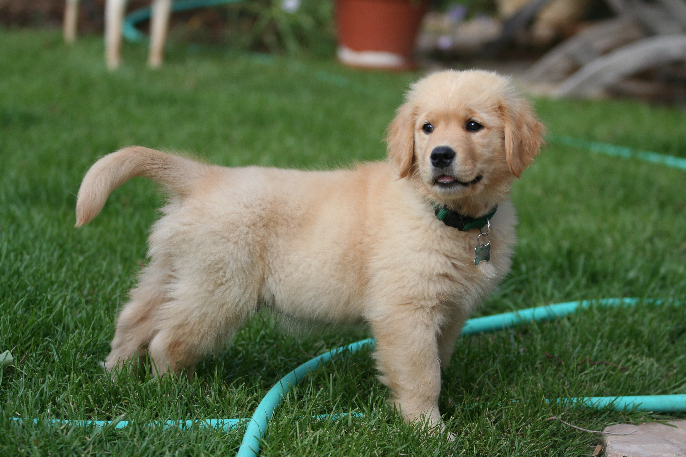

Tên khác:Akita, Akita Nhật
Nguồn gốc:Nhật Bản
Phân loại:Chó bảo vệ
Kiểu lông:Lông ngắn
Màu lông:Trắng, Vện, Nâu vàng, Đỏ
Đặc điểm ngoại hình:To lớn, tai nhỏ
Cân nặng:32-59kg
Tuổi thọ:10-15 năm
Tuổi sinh sản:1-9 tuổi